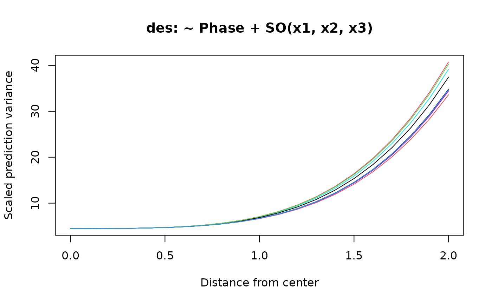
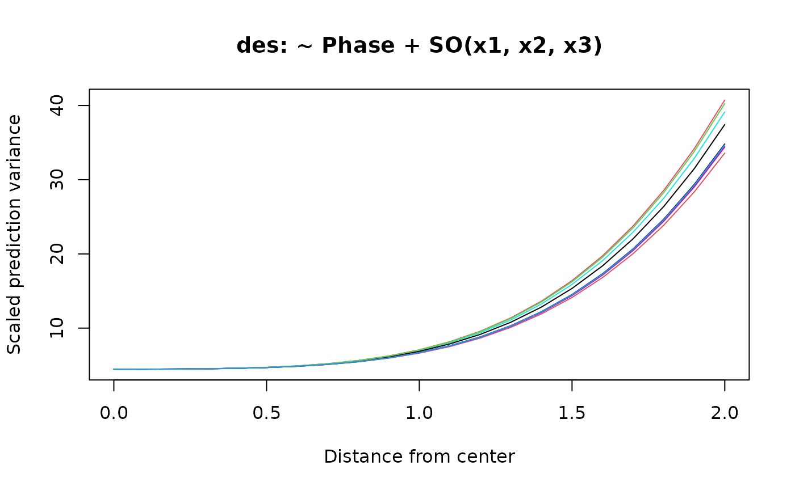

Display the scaled variance function for a design
varfcn.RdThis function computes the scaled variance function for a design, based on a specified model. Options include plotting separate curves for each of several directions from the center, or a contour plot for two of the design factors.
Usage
varfcn(design, formula, dist = seq(0, 2, by = 0.1), vectors, contour = FALSE,
plot = TRUE, main, ...)Arguments
- design
A
data.frameorcoded.dataobject- formula
The model formula for which to compute the variance function
- dist
Vector of distances from the origin at which to compute the scaled variance
- vectors
A
data.frameof design variables. Each nonzero row specifies a direction in which to calculate the scaled variance.- contour
A logical variable. If
TRUE, a contour plot is produced; ifFALSE, curves are plotted for each direction invectors.- plot
A logical variable. If
TRUE, a plot is produced.- main
Title for the plot. The default is constructed based on the name of
designandformula.- ...
Details
The scaled prediction variance at a particular design point is the variance of the predicted value, multiplied by the sample size N, and divided by the error variance. (See, for example, Montgomery et al., Section 8.2.1). It depends on the design point, but for a symmetric design, it depends only on the distance from the origin and the direction. This function provides a simple way to examine the variance function directly. (There are other more sophisticated methods available that integrate-out the direction, for example in the vdg package.
If vectors is not specified and contour==FALSE, the function generates default directions along one axis, and on a diagonal through a corner in each dimension. For example, with four design variables, the default directions are (1,0,0,0), (1,1,0,0), (1,1,1,0), and (1,1,1,1). The graph produced shows how the scaled variance changes along each of these vectors, for the distances provided. In a rotatable design, these curves will all be the same.
When countour==TRUE, only the ordering of columns in vectors matters. A grid is constructed over the distance range for the first two variables in vectors. The design points are also plotted for reference, with different symbol sizes depending on replications. When there are more than two response-surface predictors, the contour plot may be misleading, as it does not display what happens as one simultaneously varies three or more variables.
Value
The function invisibly returns a data.frame containing the data that was (or would have been) plotted.
References
Myers, RH Montgomery DC, and Anderson-Cook CM (2009) Response Surface Methodology (3rd ed.), Wiley.
Examples
des = ccd(~ x1 + x2 + x3, alpha = 1.5, block = Phase ~ x1*x2*x3, randomize=FALSE)
varfcn(des, ~ Phase + SO(x1, x2, x3))
varfcn(des, ~ Phase + SO(x1, x2, x3), contour=TRUE)
 # 10 random directions
dirs = data.frame(x3=rnorm(10), x2=rnorm(10), x1=rnorm(10))
varfcn(des, ~ Phase + SO(x1, x2, x3), vectors = dirs)

# exclude some points to make it more interesting
lost = c(1,2,3,5,8,13,21)
varfcn(des[-lost, ], ~ Phase + SO(x1, x2, x3), contour=TRUE)
# different plot due to order of columns
varfcn(des[-lost, ], ~ Phase + SO(x1, x2, x3), vectors = dirs, contour=TRUE)
# 10 random directions
dirs = data.frame(x3=rnorm(10), x2=rnorm(10), x1=rnorm(10))
varfcn(des, ~ Phase + SO(x1, x2, x3), vectors = dirs)

# exclude some points to make it more interesting
lost = c(1,2,3,5,8,13,21)
varfcn(des[-lost, ], ~ Phase + SO(x1, x2, x3), contour=TRUE)
# different plot due to order of columns
varfcn(des[-lost, ], ~ Phase + SO(x1, x2, x3), vectors = dirs, contour=TRUE)